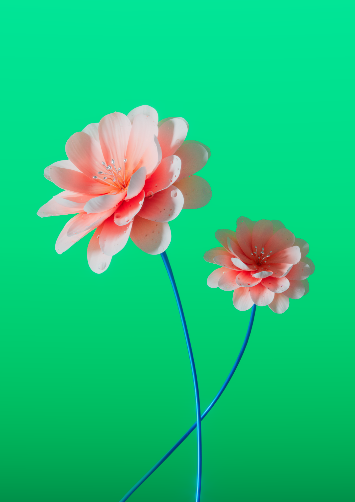
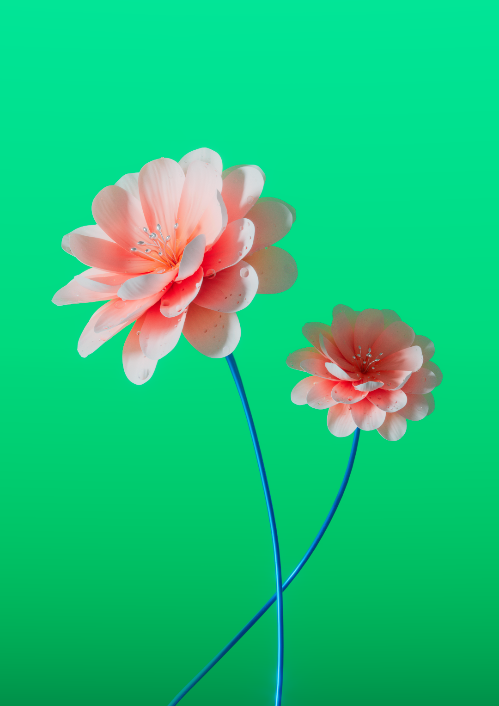
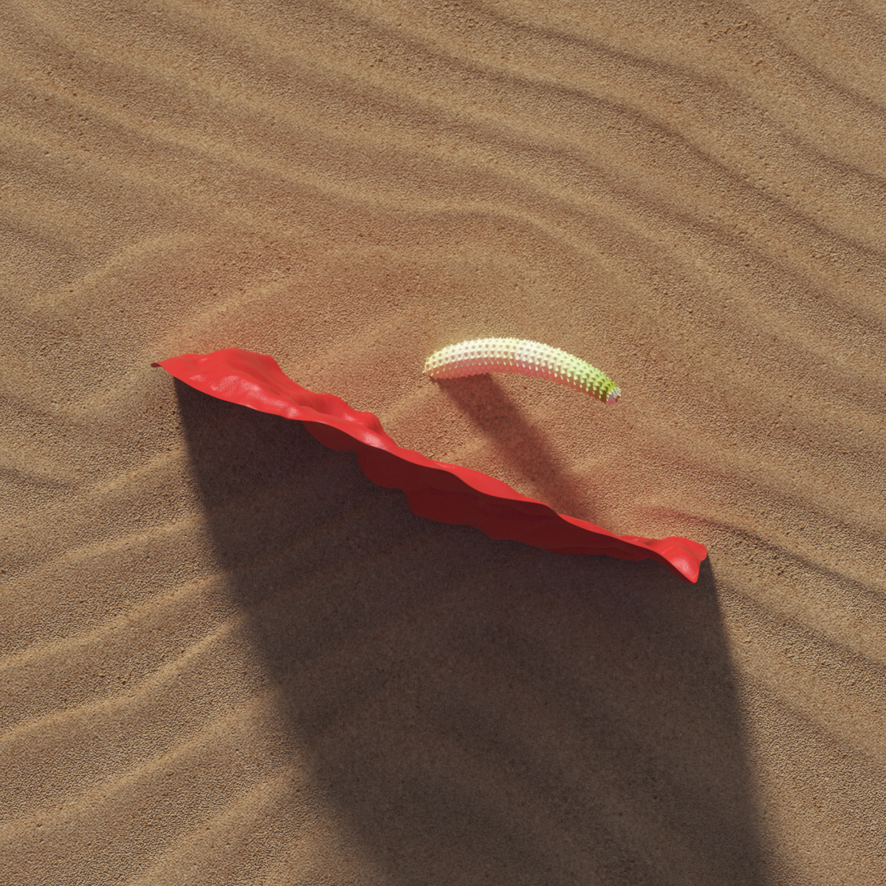
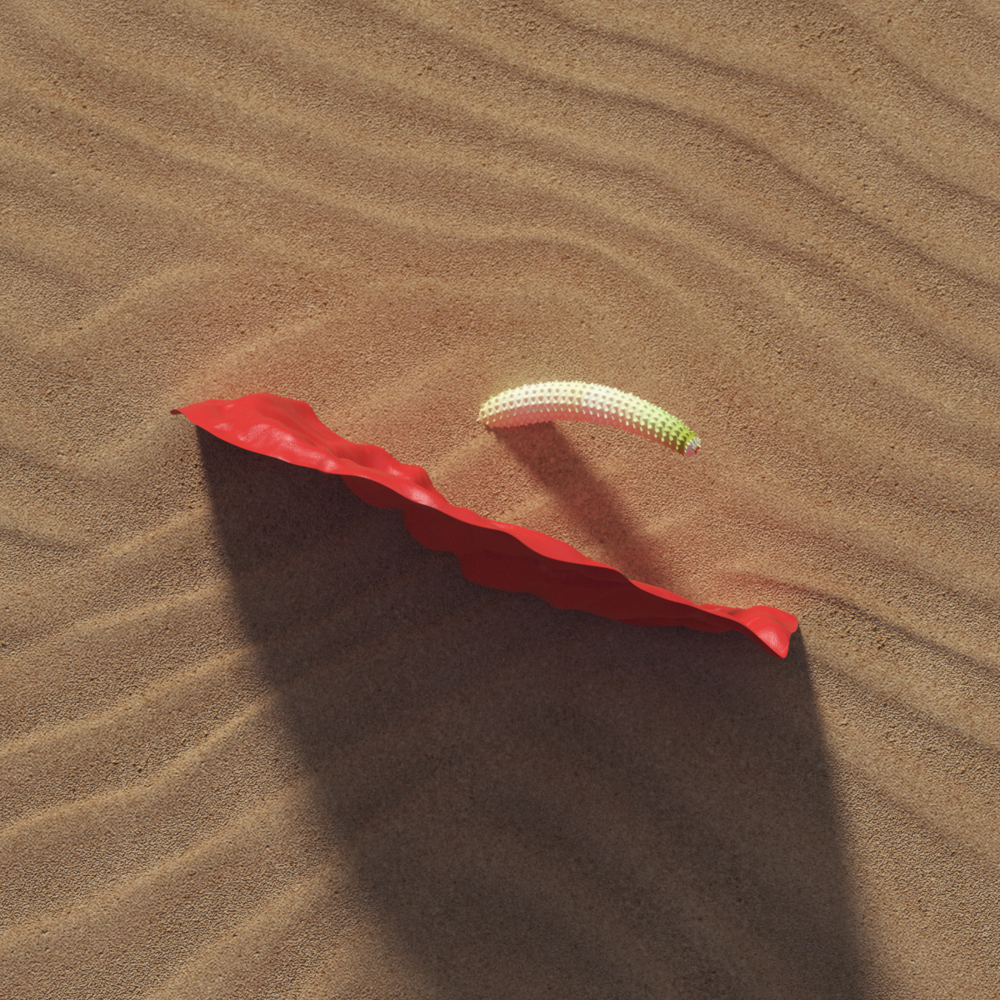

Flowers
Growing up my mom had a lot of plants and flowers at home and that makes me love to portrait flowers in my renders. This project is a selection of those illustrations I did along the years.
Client: Various
3D, Visual communication
Year: 2018 → ...


 

 
